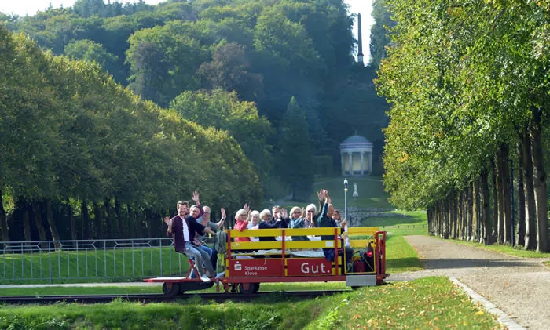

Nieuws ·
Fietsen op het spoor – van Groesbeek naar Kleve (vanaf 1 april 2022)

Dit bericht uit ons archief verscheen op 1 januari 2022 op NieuwsNijmegen.nl. Data, tijden en prijzen kunnen inmiddels anders zijn.
Seizoen 2022: van 1 april t/m 31 oktober 2022
Let op: i.v.m. de coronacrisis zijn er hygienevoorschriften van kracht. Kijk voor actuele informatie op de website.
Bijna 30.000 bezoekers trokken vorig jaar met de fietstrein de landsgrenzen over. Ze fietsten over een voormalige spoorrail van Nederland naar Duitsland en vice versa. Met de nieuwe arrangementen wordt dit sportieve en unieke uitje ook steeds populairder onder Nederlanders. De arrangementen bestaan uit een ritje op de fietstrein in combinatie met een andere leuke activiteit, een lekkere lunch of diner.
Grenzeloos genieten voor jong en oud
Grenzland-Draisine, de organisatie achter de fietstreinen, ziet een toename van dagjesmensen en toeristen uit Nederland. Maar ook van Nederlandse bedrijven en verenigingen die een tocht met de fietstrein boeken als teamuitje, gezellige afsluiting van het sportseizoen of als alternatief voor de bedrijfsborrel.
Diverse arrangementen
Fietsen op het spoor is uitstekend te combineren met een heerlijke lunch, diner of extra actieve of culturele activiteit. Bekijk alle arrangementen op www.fietsenophetspoor.nl en ontdek de leukste en fijnste plekken van Groesbeek, Kranenburg en Kleve.
Routes
Je hebt de keuze uit twee mooie routes. De grenzeloze route leidt je van Groesbeek naar Kranenburg en terug. De uitgebreide route loopt van Kranenburg naar Kleve en terug. Kijk voor de vertrektijden op www.fietsenophetspoor.nl
Arrangementen
Wissel je activiteit af met een bezoek aan Groesbeek, Kranenburg of Kleve. Of reserveer een van onze arrangementen. Bekijk alle mogelijkheden op www.fietsenophetspoor.nl
Korting
Kinderen tot 2 jaar zijn gratis. Kinderen tussen de 3 en 14 jaar krijgen 50% korting. Iedere woensdag is het familiedag (één kind gratis) en iedere donderdag ontvangt iedereen boven de 65 jaar 50% korting. Bij schoolgroepen geldt dat één leraar of lerares per schoolklas altijd gratis mee mag.
Reserveren
We raden aan om vooraf te reserveren. Ga voor meer informatie en reserveren naar www.fietsenophetspoor.nl
Grenzland-Draisine GmbH
Bahnhofstrasse 15
47559 Kranenburg – Duitsland
Tel.: 024 – 808 0313 // 0049-2826-917 9900
www.fietsenophetspoor.nl
Toerisme Nijmegen en Kleve – Winkels Kleve – Agenda Nijmegen
DEUTSCH (2020)
Kranenburg, 13 mei 2020
Grenzland-Draisine fährt nun auch in den Niederlanden wieder!
Seit dem 11. Mai konnte auch die Grenzland-Draisine ihren Betrieb zwischen Kleve und Kranenburg wieder aufnehmen. Nun darf auch die Strecke zwischen Kranenburg und Groesbeek wieder befahren werden. Auf niederländischer Seite dürfen Personen, die in einem Haushalt leben, unter Einhaltung der Hygienevorschriften gemeinsam Draisine fahren.
Buchungen können über das Buchungssystem auf der Internetseite www.grenzland-draisine.eu, unter Tel.: 02826/9179900 und per Email an info@grenzland-draisine.eu getätigt werden.
Kosten: 12 € (Montag bis Donnerstag) bzw. 16 € (Freitag bis Sonntag & Feiertage)
Kinder bis 14 Jahre bezahlen die Hälfte. Außerdem erhalten Senioren ab 65 Jahren zukünftig donnerstags 50% Ermäßigung und am Mittwoch fährt bei Familien ein Kind gratis mit!
Kranenburg, 13 mei 2020
Grenzland-Draisine fährt wieder!
Die Grenzland-Draisine rollt endlich wieder auf den Schienen zwischen Kleve, Kranenburg und Groesbeek. Nachdem am Montag, 11. Mai 2020 seitens des Landes Nordrhein-Westfalen Lockerungen bei den Freizeitangeboten beschlossen wurden, darf die Draisine nun wieder verkehren.
Somit ist der Betrieb der Draisine unter der Einhaltung der Hygienevorschriften, der Abstandsregeln und der Auswahl der Personengruppen wieder gestattet. Auf deutscher Seite gilt, dass mehrere Personen im öffentlichen Raum nur zusammentreffen dürfen, wenn sie Verwandte in gerader Linie, Geschwister, Ehegatten, Lebenspartnerinnen und Lebenspartner oder Personen aus max. zwei verschiedenen häuslichen Gemeinschaften oder es sich um eine Begleitung minderjähriger oder unterstützungsbedürftigen Personen handelt. Auf niederländischer Seite dürfen bis auf weiteres Personen aus einem Haushalt gemeinsam auf der Draisine fahren.
Buchungen können über das Buchungssystem auf der Internetseite www.grenzland-draisine.eu, unter Tel.: 02826/9179900 und per Email an info@grenzland-draisine.eu getätigt werden.
Kosten: 12 € (Montag bis Donnerstag) bzw. 16 € (Freitag bis Sonntag & Feiertage)
Kinder bis 14 Jahre bezahlen die Hälfte. Außerdem erhalten Senioren ab 65 Jahren zukünftig donnerstags 50% Ermäßigung und am Mittwoch fährt bei Familien ein Kind gratis mit!
Tel.: 02826/9179900, per Email an info@grenzland-draisine.eu oder online auf www.grenzland-draisine.eu getätigt werden.
Een draisine is een klein railvoertuig, in het Nederlands ‘fietstrein’ genoemd.